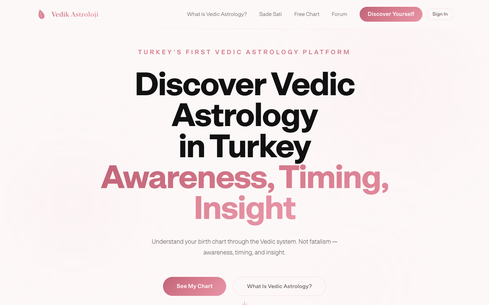
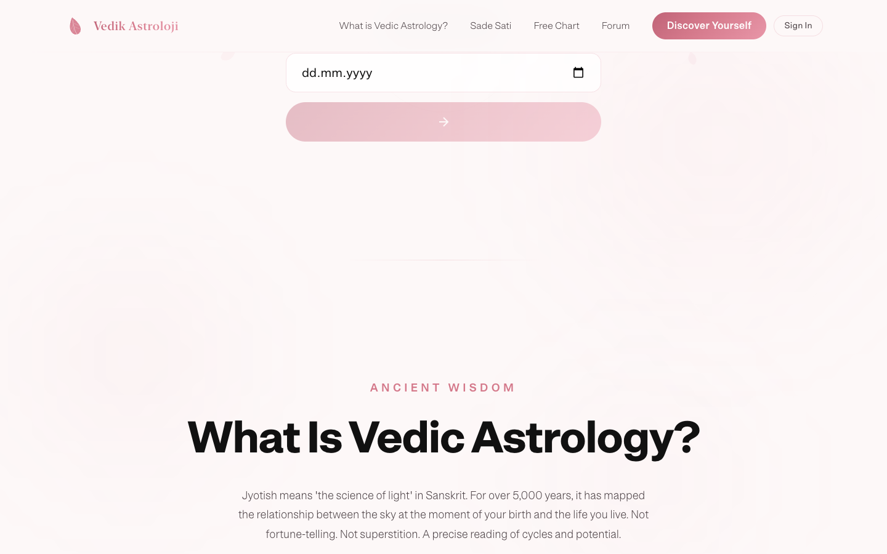
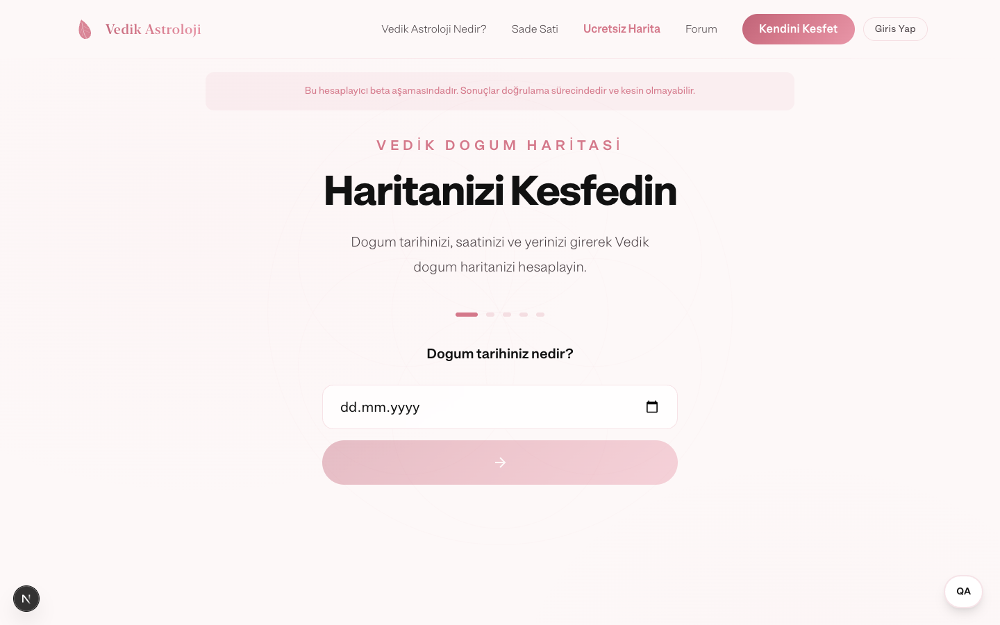
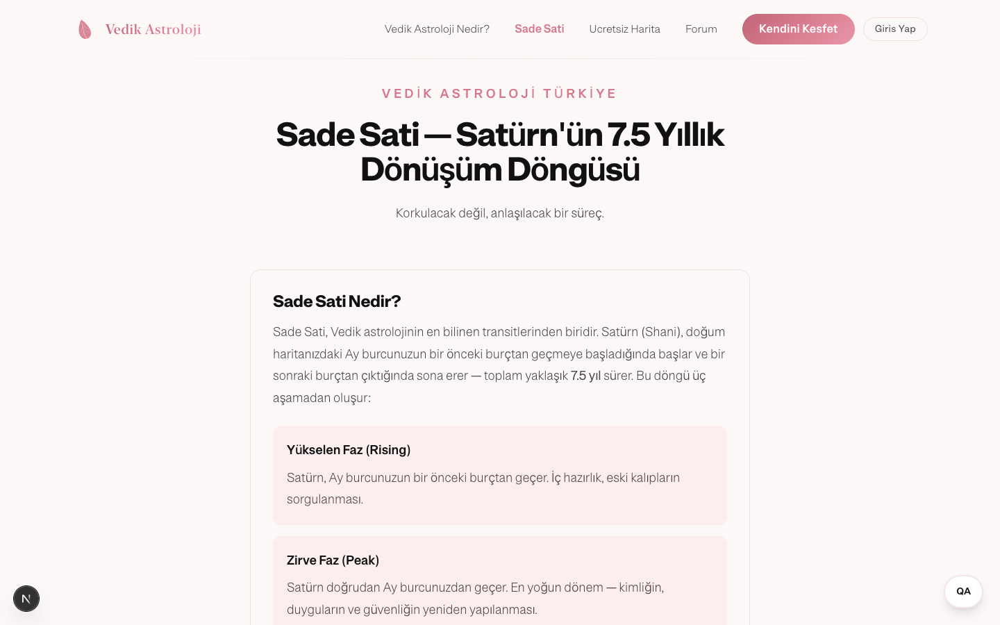
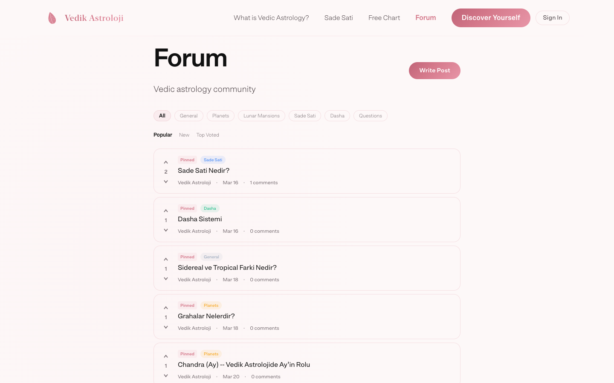
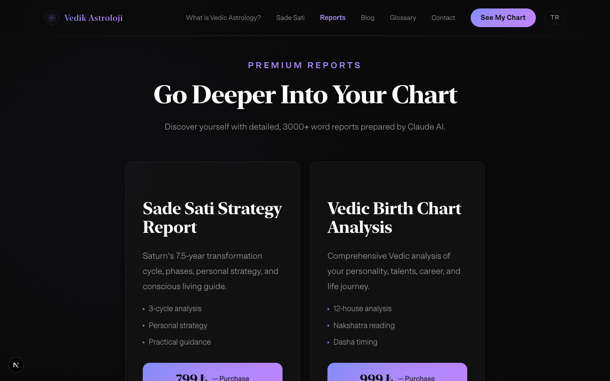

Jyomi
Нулевой рынок
Рынок астрологии в Турции — $5M+. Одно приложение Faladdin набрало 20 миллионов загрузок. Ведическая астрология в Турции: ноль цифровых продуктов.
Задача — спроектировать и запустить платформу с нуля: лендинг, калькулятор натальной карты, платные отчёты, глоссарий, форум. Двуязычная, с монетизацией через Shopier.

Не гадание — образование
2025: основателя Faladdin задержали. «Fal» (гадание) — юридический риск в Турции. Позиционирование: образование и самопознание, не предсказания. «Показывает тенденцию» вместо «это произойдёт». Классические тексты (BPHS, Phaladeepika, Brihat Jataka) как источник. Платформа объясняет концепции — Lagna, Rashi, Nakshatras, Dasha — на турецком языке.

Калькулятор натальной карты
Пошаговая форма: дата, время, город. VedAstro для расчётов, OpenStreetMap для геокодинга, TimeAPI для часовых поясов. Реальные астрономические вычисления, не генеративный AI. Бесплатный уровень — базовая карта. Платные отчёты — детальная AI-интерпретация через Claude. Калькулятор встроен прямо в лендинг, можно попробовать без перехода на отдельную страницу.

Sade Sati — флагманский продукт
7,5-летний цикл транзита Сатурна через три фазы. Для многих турков — первое знакомство с ведической астрологией. Персонализированный отчёт: временная шкала, текущая фаза, рекомендации. Контент-стратегия строится вокруг Sade Sati как точки входа: образовательная страница объясняет концепцию, калькулятор показывает персональные даты, платный отчёт даёт глубокий анализ.

Контент-платформа
Глоссарий из 50+ ведических терминов на турецком. Каждый термин — страница с санскритским оригиналом, объяснением и контекстом. Основа для SEO: нулевая конкуренция по турецким ведическим запросам. Форум — пространство для обсуждений. Блог — образовательные статьи. Рассылка «Weekly Stellar Insights». Всё билингвально: турецкий + английский через i18n-систему.

Три уровня дохода
Бесплатный: калькулятор, блог, глоссарий, форум. Цель — трафик и email-база.
Платные отчёты: Sade Sati, натальная карта, бандл. 399–3 490 TRY через iyzico с taksit (рассрочка — культурная норма в Турции).
Будущее: подписка, курсы, персональные консультации.

Стек
Next.js 16 (App Router), TypeScript, Tailwind CSS v4. Framer Motion для анимаций. Plausible.io для аналитики. VedAstro + Prokerala + VedicAstroAPI для астрономических расчётов. Claude AI для интерпретаций. iyzico для платежей. Vercel для деплоя.
Моя роль
Единственный дизайнер и разработчик. Провёл анализ рынка, разделил бренд на платформу и персональный сайт эксперта, спроектировал все страницы и компоненты. Написал весь код: лендинг, калькулятор, форум, глоссарий, i18n, платёжную интеграцию. 50+ терминов глоссария. Настроил SEO-стратегию под нулевую конкуренцию.